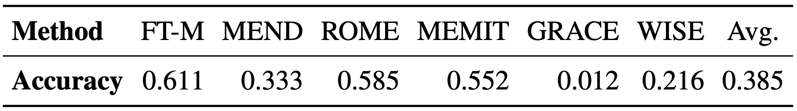

Satisfactory Advances of Model Editing
Table 1: Evaluation results of mainstream model editing techniques on benchmark datasets, as reported in "A Comprehensive Study of Knowledge Editing for Large Language Models".
Recent works report near-perfect results of model editing techniques on corresponding benchmarks, suggesting substantial progress toward efficient and effective update of LLMs. However, these results often come from synthetic, oversimplified evaluation settings (e.g., identical prompts for editing and testing) that may fail to capture real-world complexities. This disparity raises a critical question: Can these promising results in the literature translate to practical applications?
Evaluate Editing in the Wild

Figure 1: Illustration of QAEdit pipeline to evaluate model editing in real-world QA.
To rigorously examine the practical utility of model editing, we focus on the most fundamental and widely studied task of QA for two reasons: i) They offer clear evaluation criteria and broad applicability; ii) If current editing methods struggle on basic QA tasks, then they are unlikely to succeed in more challenging scenarios. Specifically, we apply editing methods to correct LLMs' errors in QA tasks and assess the improvement by re-evaluating edited LLMs on a standard QA evaluation framework (lm-evaluation-harness), as illustrated in Figure 1.
Table 2: Accuracy of edited Llama-2-7b-chat on questions it failed before editing in QAEdit.
Model Collapse Induced by Editing
Single Editing
Table 1: Examples of HardCF that induce collapse in corresponding LLMs through a single ROME edit, with the "Normal" row showcasing other normal cases from COUNTERFACT for contrast.
Upon examining the perplexity, we find that ROME consistently causes all three LLMs under study (GPT-2-XL, GPT-J, and Llama2-7b) to collapse with a single edit when applied to COUNTERFACT. Examples presented in Table 1 indicate that, for GPT-2-XL and GPT-J, the samples causing model collapse primarily featuring subjects that are single, commonly used words; for Llama2-7b, the subjects in these challenging cases usually encompass names of individuals or entities, presented in a particular format.
Figure 3: The absolute difference between the weights of the edited layer (Layers.5.mlp.down_proj) and its original weights for ROME-edited Llama2-7b models.
To uncover the root causes of model collapse, we initiated a preliminary investigation into the parameter changes in edited models. Figure 3 shows that the collapsed model experienced significantly larger parameter changes than the stable edited model.
Sequential Editing
Figure 4: Perplexity evolution over 107 editing iterations for normal and hard cases. The y-axes are tailored for each subplot accordingly due to the the significant variation in the magnitude of perplexity changes.
Further experiments in sequential editing reveal that, hard cases from single editing can induce model collapse under nearly all the combinations examined. Conversely, normal cases that are randomly sampled from the rest of COUNTERFACT, do not compromise the integrity of models when edited by ROME and MEMIT.
HardEdit: A Challenging Dataset
Figure 5: Perplexity in three LLMs, each edited by four different methods sequentially on the HardEdit dataset.
To further facilitate comprehensive evaluations of future advanced methods, we crafted a challenging dataset, termed HardEdit, based on the patterns derived from the hard cases. Extensive experiments confirm the efficacy of the dataset in identifying the potential risks of editing algorithms.
BibTeX
@inproceedings{yang-etal-2024-butterfly,
title = "The Butterfly Effect of Model Editing: Few Edits Can Trigger Large Language Models Collapse",
author = "Yang, Wanli and
Sun, Fei and
Ma, Xinyu and
Liu, Xun and
Yin, Dawei and
Cheng, Xueqi",
editor = "Ku, Lun-Wei and
Martins, Andre and
Srikumar, Vivek",
booktitle = "Findings of the Association for Computational Linguistics ACL 2024",
month = aug,
year = "2024",
address = "Bangkok, Thailand and virtual meeting",
publisher = "Association for Computational Linguistics",
url = "https://aclanthology.org/2024.findings-acl.322",
pages = "5419--5437",
abstract = "Although model editing has shown promise in revising knowledge in Large Language Models (LLMs), its impact on the inherent capabilities of LLMs is often overlooked. In this work, we reveal a critical phenomenon: even a single edit can trigger model collapse, manifesting as significant performance degradation in various benchmark tasks. However, benchmarking LLMs after each edit, while necessary to prevent such collapses, is impractically time-consuming and resource-intensive. To mitigate this, we propose using perplexity as a surrogate metric, validated by extensive experiments demonstrating changes in an edited model{'}s perplexity are strongly correlated with its downstream task performances. We further conduct an in-depth study on sequential editing, a practical setting for real-world scenarios, across various editing methods and LLMs, focusing on hard cases from our previous single edit studies. The results indicate that nearly all examined editing methods result in model collapse after only few edits. To facilitate further research, we have utilized GPT-3.5 to develop a new dataset, HardEdit, based on those hard cases. This dataset aims to establish the foundation for pioneering research in reliable model editing and the mechanisms underlying editing-induced model collapse. We hope this work can draw the community{'}s attention to the potential risks inherent in model editing practices.",
}